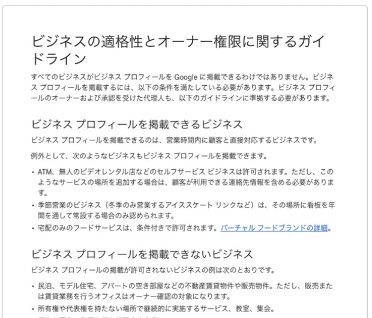

Google検索やGoogleマップに、所在地、営業時間、電話番号、ホームページなどを表示できるのがGoogleビジネスプロフィールです。開業時の集客導線になりますが、すべての事業が登録できるわけではなく、実態に合わない住所表示は停止の原因にもなります。
開業準備中に確認したい掲載条件、事業形態の選び方、登録から公開後の管理までを順番に整理します。
この記事のポイント
- 営業時間中に顧客と対面で接する事業が掲載の基本条件
- 住所を表示するかは、実際にその場所で顧客対応するかで決める
- 既存プロフィールの確認後、名称・カテゴリ・連絡先を実態どおりに登録する

最初に「掲載できる事業か」を確認する
Googleの掲載条件では、公表した営業時間中に顧客と対面で接することが基本です。顧客が訪問できる実店舗だけでなく、事業者が顧客先へ訪問する場合も対象になります。一方、対面接点のないオンライン専業や実態のないバーチャルオフィスなどは原則として対象外です。
共有オフィスの住所を掲載するには、明確な看板があり、営業時間中に顧客を受け入れ、事業者自身のスタッフが常駐していることが求められます。郵便を受け取れるだけでは、来店拠点として表示できるとは限りません。
店舗型・サービス提供地域型・ハイブリッドを選ぶ
| 形態 | 向いている事業 | 住所の扱い |
|---|---|---|
| 店舗型 | 顧客が営業時間中に来店する事業 | 要件を満たす実在の拠点を表示 |
| サービス提供地域型 | 顧客先へ訪問してサービスを行う事業 | 住所を非表示にし、対応地域を設定 |
| ハイブリッド | 拠点で来店対応し、顧客先へも訪問する事業 | 拠点と対応地域の両方を設定 |
基準は集客上の有利不利ではなく、普段の顧客対応との一致です。来所を受け付けないなら住所を非表示にし、実際に訪問できる地域だけを登録します。
登録前に重複と基本情報をそろえる
新規作成の前に、Google検索とGoogleマップで「正式な事業者名＋所在地」「電話番号」を検索します。既存プロフィールがあれば重複して作らず、所有権の申請や情報修正を行います。
名称は、看板、ホームページ、名刺で一貫して使う正式名称とし、検索対策だけの地域名やサービス名を付け足しません。実態に近い主カテゴリ、通常の営業時間、直接つながる電話番号、公式ホームページ、住所または対応地域もそろえます。
開業予定日の機能と公開時期は分けて考える
Googleには開業予定日を設定する機能があり、オーナー確認後、開業日前から表示される場合があります。ただし、これはGoogle上の機能であり、許認可、資格登録、士業名称の使用、業務受付を法的に認めるものではありません。
当事務所の現在の準備状況も、登録・開業条件と施設の実態を確認してから公開する前提で、名称、カテゴリ、連絡先、説明文、写真を準備する段階までです。プロフィール開設済み、掲載資格確定という意味ではありません。
オーナー確認はGoogleが提示する方法で行う
基本情報を入力すると、Googleが登録内容に応じた確認方法を提示します。動画、電話・SMS、メール、ライブビデオ通話、郵送などがあり、自由に変更できるとは限りません。
動画では、周辺の標識、看板、業務用設備、事業者が場所を管理していることなどを求められる場合があります。案内を読み、個人情報や無関係な人を映さないようにし、確認コードも第三者へ渡しません。
登録前チェックリスト
- 営業時間中に顧客と対面で接する事業か確認した
- 店舗型・サービス提供地域型・ハイブリッドの区分を決めた
- Google検索とGoogleマップで重複プロフィールを確認した
- 正式名称、主カテゴリ、営業時間、電話番号、ホームページをそろえた
- 住所を表示する場合は、来所対応・看板・常駐の実態を確認した
- オーナー確認に必要な拠点・設備・権限を説明できる
- 資格登録や許認可に照らした公開可能日を確認した
開業後は「正しい状態を保つ」
祝日や臨時休業の営業時間、電話番号、ホームページ、提供サービスが変わったら更新します。外観や入口の写真は来訪者の迷いを減らし、質問や口コミには事実に基づいて対応します。
管理担当を決め、不要になった管理者は外します。名称や住所の変更で再確認が必要になる場合に備え、変更履歴と根拠資料も残します。
よくある質問
- オンラインだけで事業を行う場合も掲載できますか？
- Googleは、営業時間中に顧客と対面で接する事業を掲載対象としています。オンラインだけで完結し、顧客との対面接点がない事業は原則として対象外です。
- 自宅や共有オフィスの住所を非表示にできますか？
- 顧客先へ訪問するサービス提供地域型では、住所を非表示にして対応地域を設定します。来店を受け付ける拠点として住所を表示する場合は、営業時間中の対面対応や看板など、Googleの要件を満たす必要があります。
- オーナー確認の方法は自分で選べますか？
- 確認方法はGoogleが事業や登録内容に応じて提示します。動画、電話・SMS、メール、ライブビデオ通話、郵送などがあり、表示された手順に従います。
- 開業予定日を設定すれば、開業前から事務所名を公開してよいですか？
- Googleの開業予定日はプロフィール上の表示機能であり、法令上の名称使用や業務受付を許可するものではありません。士業は登録日と関係法令を確認し、公開時期を別途判断する必要があります。
開業準備では「先にそろえ、公開は条件確認後」にする
名称、カテゴリ、説明文、写真、連絡先を下書きとしてそろえておけば、公開可能になってから慌てずに登録できます。先に公開することより、プロフィールの内容、拠点の実態、資格や許認可の状態を一致させることが大切です。